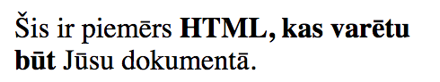
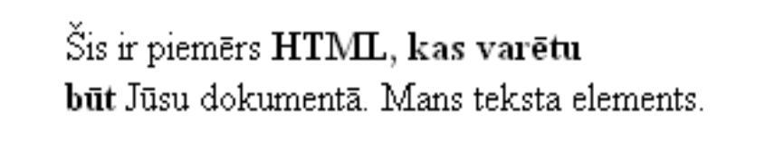

Klases izveides piemērs
function Kakjis(vards,vecums,krasa) {
this.vards=vards
this.vecums=vecums
this.krasa=krasa
this.sakaNjau = function(){
alert('Ņau, Es esmu '+vards+'!')
}
}
minka = new Kakjis('Minka',3,'balts')
document.writeln(minka.krasa) //Rezultāts: balts
minka.sakaNjau() //izmet brīdinājuma logu ar tekstu: Ņau, Es esmu Minka!
DOM koka piemērs
<p id="piem" title="piemērs">
Šis ir piemērs
<b>
HTML, kas varētu
<br />
būt
</b>
Jūsu dokumentā.
</p>

Teksta elementi
<p id="piem" title="piemērs">
Šis ir piemērs
<b>HTML, kas varētu <br />būt</b>
Jūsu dokumentā.
</p>
<script type="text/javascript">
el = document.getElementById("piem");
alert(el.childNodes[0].nodeValue);
</script>
HTML elementu atribūti
el = document.getElementById("piem");
alert(el.nodeName); //izvadīs: P
HTML elementu atribūti
el = document.getElementById("piem");
alert(el.childNodes[0].nodeValue); //izvadīs: Šis ir piemērs
alert(el.childNodes[1].nodeName); //izvadīs: B
alert(el.childNodes[2].nodeValue); //izvadīs: Jūsu dokumentā.
HTML elementu atribūti
el = document.getElementById("piem");
for (i = 0; i < el.attributes.length; i++){
if(el.attributes[i].nodeName == "title"){
alert(el.attributes[i].nodeValue); //izvadīs "piemērs"
break;
}
}
HTML elementu atribūti
el = document.getElementById("piem");
alert(el.parentNode.nodeName); //izvadīs: BODY
HTML elementu atribūti
el = document.getElementById("piem");
alert(el.id); //izvadīs: piem
HTML elementu atribūti
el = document.getElementById("piem");
alert(el.id); //izvadīs: piem
Funkcijas HTML dokumenta elementu veidošanai
new_el = document.createElement("DIV");
//elements ir izveidots, bet tas nav redzams, jo nav ielikts DOM kokā
Funkcijas HTML dokumenta elementu veidošanai
new_txt = document.createTextNode("Mans teksta elements");
//elements ir izveidots, bet tas nav redzams jo nav ielikts DOM kokā
Funkcijas HTML elementu ievietošanai un izņemšanai dokumentā
<body id="body">
<p title="piemērs" id="piem">
Šis ir piemērs <b>HTML, kas varētu <br />būt</b> Jūsu dokumentā.
</p>
</body>
<script type="text/javascript">
new_txt = document.createTextNode("Mans teksta elements.");
el = document.getElementById("piem");
el.appendChild(new_txt);
</script>

Funkcijas HTML elementu ievietošanai un izņemšanai dokumentā
new_el = document.createElement("input");
new_el.type = "text" //norāda ievades lauka tipu (text/file/submit...)
new_el.name = "ievades_lauks"
el = document.getElementById("piem");
el.insertBefore(new_el,el.childNodes[1]);

Funkcijas HTML elementu ievietošanai un izņemšanai dokumentā
el = document.getElementById("piem");
el.removeChild(el.childNodes[1]);
Lietotāju saskarnes notikumu apstrādē
elements = document.getElementById("piem");
elements.addEventListener(notikums, funkcija, false);
Lietotāju saskarnes notikumu apstrādē
//funkcija ar kuru var norādīt kādu funkciju izpildīt pie konkrēta
//notikuma, kas noticis ar konkrētu objektu.
function pievienotNotikumam(objekts, notikums, funkcija){
objekts.addEventListener(notikums, funkcija, false);
}
Lietotāju saskarnes notikumu apstrādē
//funkcija ar kuru var norādīt kādu funkciju izpildīt pie konkrēta
//notikuma, kas noticis ar konkrētu objektu.
function pievienotNotikumam(objekts, notikums, funkcija){
objekts.addEventListener(notikums, funkcija, false);
}
function pazinojums(){
alert("izvadu paziņojumu!");
}
el = document.getElementById("piem");
pievienotNotikumam(el, "click", pazinojums);
//kad uzklikšķināsiet uz tekstu tiks parādīts paziņojums
Informācija par notikumu un objektu
function pazinojums(event){
var target = event.target;
//mainīgais target ir saite uz notikumu
//izraisošo elementu
if(target){
alert("notikums: "+event.type
+", kuru izsauca: "+target.nodeName);
}
}
Formas nosūtīšana u.c.
<p title="piemērs" id="piem">
Šis ir piemērs <b>HTML, kas varētu <br />būt</b> Jūsu dokumentā.
</p>
<form id="forma" method="get">
<input type="submit" name="sutit" value="sutit" />
</form>
<script type="text/javascript">
//kad uzklikšķina uz paragrāfa
var el = document.getElementById("piem");
pievienotNotikumam(el, "click", pazinojums);
//kad nosūta formu
var forma = document.getElementById("forma");
pievienotNotikumam(forma, "submit", pazinojums);
//kad ielādējas lapa
var body = document.getElementById("body");
pievienotNotikumam(window, "load", pazinojums);
</script>